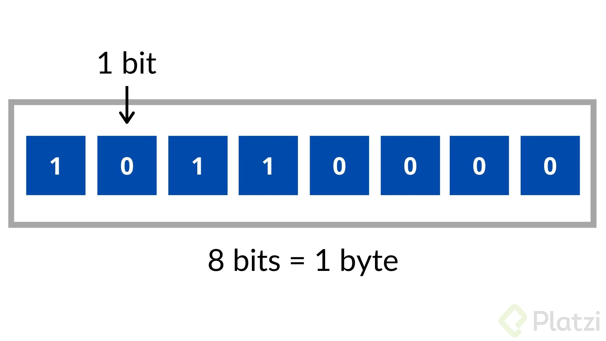
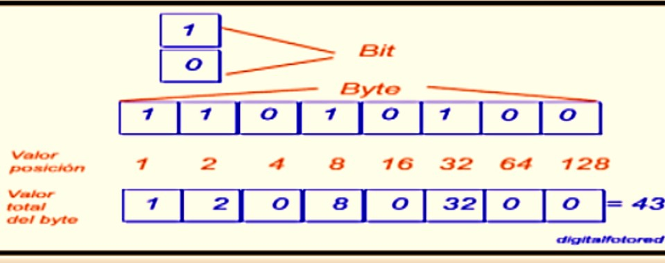
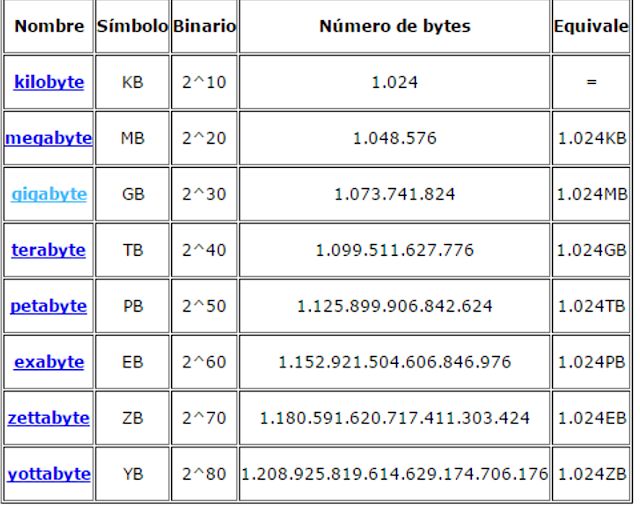

Modulo 3
Conceptos basicos de informatica
Bit y Byte
14-05-2022
BIT
Bit es acrónimo de Binary digit (digito binario). El bit la unidad de medida más pequeña que existe en la informática, pudiendo representar solamente uno de dos tipos de datos (0, 1), usando el sistema de numeración binario.Las computadoras para realizar sus tareas necesitan de muchos bits que representan datos, y cuando los bits se juntan y se combinan se crean unidades de medida más grandes como:
- Bytes(B)
- 8 Bits
- Kilobytes(KB)
- 1024 Bytes
- Megabytes(MB)
- 1024 Kilobytes
- Higabytes(GB)
- 1024 Megabytes
Que representan el tamaño de los archivos, programas y la capacidad de almacenamiento de un dispositivo.
Byte
Como se puede ver los Bytes es la primera unidad de medida que componen lo bits, siendo así la unidad estándar de medida que se usa en informática. Denominado como octeto por que se compone de 8 bits, y no posee un símbolo determinado para representarlo, pero en algos países se usa la “B” para representarlo. Su acrónimo significa Binary Tuple que significa la secuencia ordenada de elementos binarios, y normalmente 1 Byte equivale a una letra, por lo que textos completos pueden equivaler a un gran número de Bytes, de allí es donde salen todas las escalas de medida de información.|  |  |
Multiplos en Bytes
El Byte es la unidad fundamental de datos, por lo que se parte de ella para representar los diferentes términos existentes. Los prefijos que se emplea en los múltiplos del byte son los mismo del Si, también se utilizan los prefijos binarios, solo con la única diferencia que varía según el prefijo que es el valor de los bytes. La notación del Sistema Internacional de Unidades utiliza un sistema decimal y trabaja sobre potencia 10, para conocer el valor de cada uno de los prefijos.
Lista de actividades
|

© 2022 Grupo5
© Derechos reservados